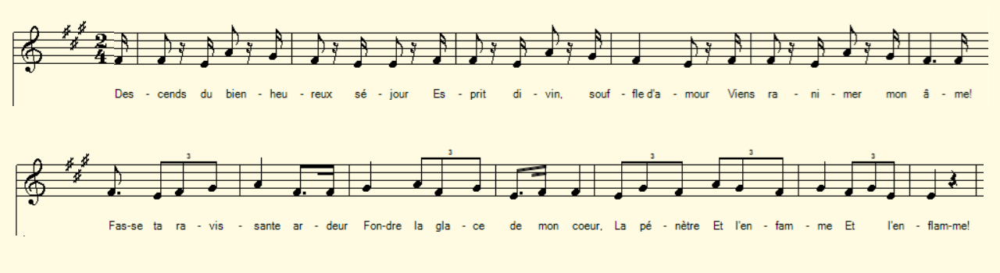

|
A propos de la mélodie Le poème français de l'abbé Julien Gautier, prêtre réfractaire du diocèse de Saint-Malo et vicaire de Bruc qui mourut à trente ans sur l'échafaud dressé à Rennes le 16 juillet 1794 a certainement été composé pour être chanté sur une mélodie précise. C'est ce qui explique l'alternance de vers à huit pieds et de vers à 7 pieds répétés (en tout ou en partie?) selon les indications du manuscrit conservé qu château de Kerambart à Noyal-Muzillac. La mélodie du chant "La fiancée du Chouan" notée par François Divenah à Locminé (Paroisse bretonne de Paris, février 1912, Dastum p.339) peut à la rigueur convenir. A propos du texte Julien Gautier avait continué d'évangéliser ses paroissiens de Bruc et des paroisses voisines au lieu de suivre ses confrères en terre d'exil. Il tomba aux mains des révolutionnaires au commencement de l'année 1794. L'abbé Cadic, dans son commentaire, suppose que les bourreaux étaient trop occupés à couper les têtes des malheureux arrêtés après la débacle des Vendéens et ne suffisaient plus à leur tâche. Il choisirent de remettre à plus tard de moins dangereuses victimes. L'abbé Gautier attendit plusieurs mois qu'on statue sur son sort. Il fut condamné à la peine capitale. Il consacra ses derniers instants à composer ce chant en français. Je me suis permis de reconstituer la structure régulière de ce beau chant. Comme l'écrivait l'abbé Cadic, "Si la prosodie était incorrecte, ses paroles étaient celles d'un héros". |
About the tune The French poem by Julien Gautier, a non-juror priest of the diocese of Saint-Malo and parson of Bruc who died at the age of thirty on a scaffold erected in Rennes on July 16, 1794, was certainly composed to be sung to a precise melody. This explains the verses with eight feet alternating with 7 feet which are repeated (in whole or in part?) according to the indications in the manuscript preserved at Château Kerambart in Noyal-Muzillac. The melody of the song "The Chouan's bride" noted by François Divenah in Locminé (in the review "Breton Parish of Paris", February 1912, Dastum p.339) may be suitable. About the lyrics Julien Gautier went on evangelizing his parishioners in Bruc and neighbouring parishes instead of following his confreres to the lands of exile. He fell into the hands of the Revolutionaries at the beginning of 1794. Reverend Cadic, in his commentary, supposes that the executioners were too busy cutting off the heads of the unfortunate soldiers arrested after the debacle of the Vendéens and were no longer sufficient for their task. They chose to postpone the execution of less dangerous victims. Priest Gautier waited several months for a decision on his fate. He was eventually sentenced to capital punishment. He devoted his last moments to composing this song in French. I took the liberty of reconstructing here and there a regular structure for this beautiful song. As stated by Rev. Cadic, If his prosody was incorrect, his words were those of a hero. |
|
FRANCAIS 1. Descends du bienheureux séjour, Esprit divin, souffle d'amour Viens ranimer mon âme. Fasse ta ravissante ardeur Fondre la glace de mon coeur, La pénètre et l'enflamme! 2. Qu'entends-je? O Ciel, étonne-moi! L'on me somme au nom de la Loi D'abjurer ma créance! Et également d'encenser La Raison et l'Egalité, Les faux dieux de la France! 3. Tais-toi, philosophe orgueilleux! C'est à moi de t'ouvrir les yeux! Sois docile et adore En son éternelle beauté, Cette puissante Majesté Qui commande à l'aurore. 4. Tu caches par malignité De tes fêtes l'impiété Sous l'ombre du civisme. Mais l'homme instuit y voit des dieux Que révèrent d'aveugles yeux Au sein du paganisme. 5. Le croiras-tu siècle pervers? Au fond d'un cachot dans les fers Je rencontre du charme. Et tes lâches adulateurs Coulent des jours semés d'horreur Dans de vives alarmes. 6. Assouvis ta cupidité, Monde rempli d'iniquité: Dévore la substance D'un corps que tu peux engloutir, Mais à qui tu ne paux ravir La fleur de l'innocence! |
7. Souffrir pour la Foi, quel honneur! Et mourir pour Dieu, quel bonheur! J'aurais tort de m'en plaindre; Eclairé du divin flambeau, Je m'approche de l'échafaud Sans pâlir et sans craindre. 8. Dans ce délicieux moment Je vois s'ouvrir le firmament, Je découvre la gloire; Bourreau, précipite mon sort! Fais de ton instrument de mort Celui de ma victoire! 9. Tous mes désirs sont accomplis! Ah quels doux transports! Ah, je jouis D'une gloire ineffable: Assis sur un trône éclatant, Je contemple le Dieu vivant L'infiniment aimable! 10. De nos persécuteurs gagnons La bienveillance et conquérons Leurs coeurs, Dieu de clémence! Seigneur, sois sensible à nos voeux Puisque seul peut nous rendre heureux Ton regard sur la France! 11 Si nous détestons nos forfaits, Après la pluie viendra la paix. Armons-nous de courage! Pour que cesse enfin cette pluie, Apaise ton cher fils, Marie, Et fais cesser l'orage! 12. Du trône ébranlé sois l'appui Et le ferme soutien du Lys! Abolis les cénacles De nos méchants persécuteurs! Puissions-nous chanter Ta grandeur Libre de tout obstacle! |
ENGLISH 1. O come down from the blessed abode, O come down and revive my soul, Breath of love, godly Spirit! May your ravishing ardour melt The ice in which my heart is held, Penetrate it and fire it! 2. What do I hear? Amazing news! In the name of the Law I should Renounce my faith and fealty, And go as far as to incense The false new deities of France: Reason and Equality! 3. Be silent, proud philosopher! Time for your eyes to uncover! You should be tame and worship, In beauty that forever lasts And never has met its own match, The One Whom dawn must obey. 4. It's out of malice that you hide Your celebrations' godless pride As public-spiritedness. But educated men see mere Idols there that blind eyes revere Within base heathenism. 5. Do you believe it, perverse age? In this dungeon, in this bondage I mean to find enjoyment, While your cowardly admirers Are spending days strewn with horrors In great alarm and ailment. 6. Satisfy your cupidity, O, world filled with inequity: You may devour the substance Of a poor body you swallow, But from which you'll never withdraw The flower of innocence! |
7. For our Faith suffering, what a pride! Blessed whoever in the Lord died! Nothing to be regretted! Enlightened by God's flaming torch, The dismal scaffold I approach, Stoical and undaunted. 8. At this hour of felicity, See how, above, the canopy Displays a radiant glory! Beheader, take a last deep breath, Make of your instrument of death The tool of my victory! 9. My dearest wishes are fulfilled! When have I been so full of thrill, Of glorious shine in excess? I sit upon a diamond throne, And contemplate the Highest One Whose majesty is endless! 10. Of torturers, however harsh, Let us make friends, conquer their hearts! So help us God of mercy! In favour of that bid, Lord, be, Since only makes us glad and free Your look upon our country! 11. But if we loathe our infamy, May follow peace war presently. Let us be bold and daring! So that this rain comes to an end, Soothe your dear Son, Mary, and send Away the storms menacing! 12. Come and shore up the shaken throne, Put right the Lily that was thrown! Be cenacles dismissed Where is devised wickedness, That we may praise the Lord's greatness Of obstacles relieved! |